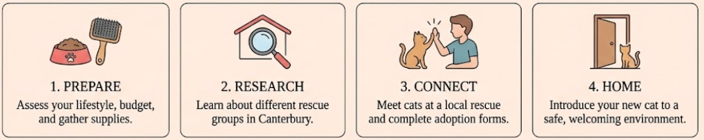

Guide to cat adoption in Canterbury
Looking to adopt a furry friend? This guide will show the entire process, from preparing your home to contacting rescue organisations.

Looking to adopt a furry friend? This guide will show the entire process, from preparing your home to contacting rescue organisations.
